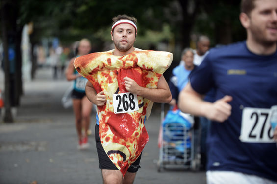

วิ่ง 4.5KM
การเตรียมตัวสำหรับนักวิ่ง นอกจากจะมีการฝึกซ้อมอย่างสม่ำเสมอแล้ว สิ่งหนึ่งที่ขาดไม่ได้และจำเป็นอย่างยิ่งคือการรับประทานอาหาร ที่จะช่วยให้นักวิ่งมีพละกำลัง และสะสมพลังงานสำรองไว้ใช้ขณะวิ่ง รวมถึงการชดเชยพลังงาน การฟื้นฟูร่างกายภายหลังจากการวิ่ง ดังนั้น นักวิ่งจึงควรมีการวางแผนการรับประทานอาหารเป็นขั้นตอน ช่วงก่อน ระหว่างและหลังการแข่งขันเพื่อให้ร่างกายฟิตสมบูรณ์ที่สุด มีความทนทานและสามารถวิ่งด้วยสมรรถภาพที่ดีไปตลอดการแข่งขัน ซึ่งแบบแผนการรับประทานอาหารแบ่งออกตามช่วงต่างๆ ดังต่อไปนี้

การเตรียมตัวช่วง 5 วันก่อนแข่งควรเพิ่มปริมาณคาร์โบไฮเดรตในมื้ออาหารให้สูงขึ้นตามระยะเวลาการฝึกซ้อมหรือระยะที่สอดคล้องกับการแข่งขันเพื่อเป็นการสะสมพลังงานสำรองในรูปไกลโคเจน ร่างกายสามารถสะสมไกลโคเจนที่กล้ามเนื้อ 80% ที่ตับ 14% ส่วนอีก 6% จะอยู่ในรูปของน้ำตาลกลูโคสในกระแสเลือด...